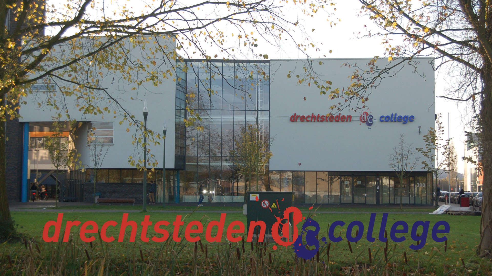

Ik zat op het Insula College Leerpark daar deed ik in het eerste jaar vmbo Kader Beroeps, mijn cijfers waren over het gemiddelde dus mocht ik een niveau hoger. In het tweede leerjaar mocht ik dus Gemengde Leerweg gaan volgen. Toen ik in het derde leerjaar ging moest ik een sectorvak kiezen en heb ik Economie gekozen. In het vierde heb ik examen gedaan en ben ik geslaagd voor mijn diploma vmbo Gemengde Leerweg. De opleiding die ik daarna heb gekozen is ICT-applicatieontwikkelaar (niveau 4)